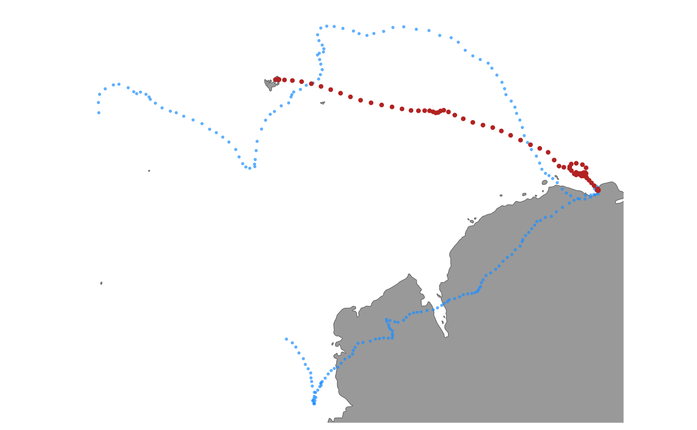

visualize tracks simulated from a aniMotum model fit
a aniMotum simulation data.frame with class sim_fit
plots tracks as "line", "points" or "both" (default).
logical; should map extent be defined by track extent (TRUE; default) or should global map be drawn (FALSE).
orientation of projected map, default is to centre on
start of fitted track (ignored if mapproj package is not installed).
number of columns to arrange multiple plots
logical; use high-resolution coastline data. Attempts to use
high-res coastline data via rnaturalearth::ne_countries with scale = 10,
if the rnaturalearthhires data package is installed. This extends the
plot rendering time so is set to FALSE by default, in which case
rnaturalearth::ne_countries with scale = 50 data are used.
additional arguments to be ignored
Plots of simulated tracks.
fit <- fit_ssm(ellie, model = "crw", time.step = 24)
#> fitting crw SSM to 1 tracks...
#>
pars: 0 0
pars: -0.99984 -0.01762
pars: -3.99938 -0.07049
pars: -2.07713 -0.93659
pars: -2.97323 -0.08926
pars: -3.1287 -1.07992
pars: -3.29972 -3.51111
pars: -3.24388 -3.66163
pars: -3.24388 -3.66163
trs <- sim_fit(fit, what = "p", reps = 2)
plot(trs, type = "b")
